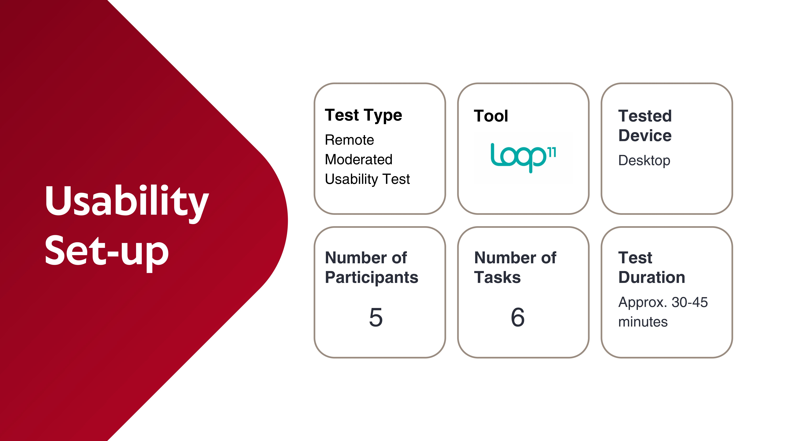
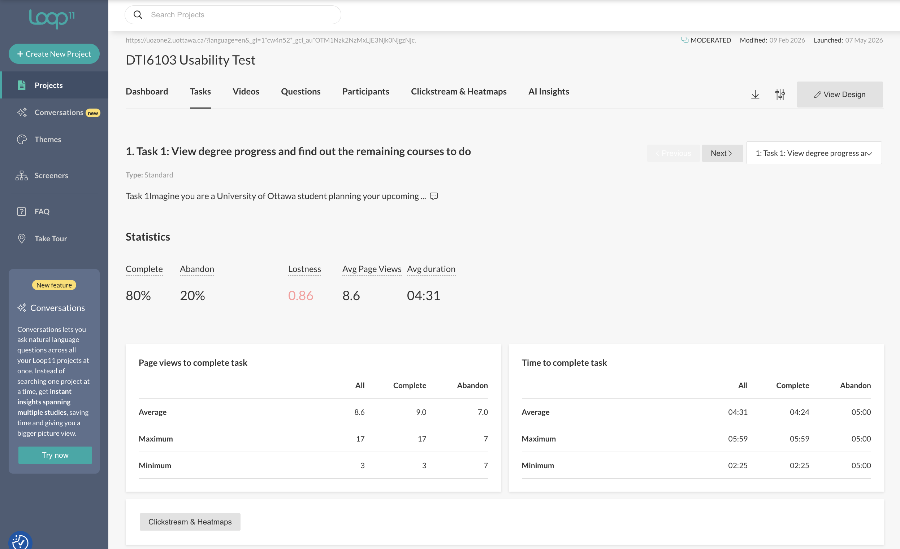

Evaluating the Usability & Information Architecture of an Academic Portal
Assessing the uoZone platform to improve findability, navigation clarity, and user confidence for students managing complex academic workflows.
Overview
uoZone is a critical academic platform, but students struggle to find key information due to unclear navigation and poor information structure, leading to confusion, inefficiency, and reliance on external search. These issues increase task completion time, reduce user confidence, and force users to rely on external tools.
Research Objectives
To identify and resolve these usability issues, our research evaluated user interactions across 6 key tasks, measuring:
Task completion rates and error recovery.
Time on task, click paths, and navigation detours.
Perceived usability and emotional response, measured via the System Usability Scale (SUS)
Methodology

Research & Data Analysis
We applied multiple usability testing methods and data analyses to uncover where and why uOttawa students experience friction, confusion, or drop off when navigating the uoZone platform.
We analyzed performance data from Loop11, including task success/abandonment rates, time-on-task, and page views, to objectively measure system efficiency and effectiveness.

Key Findings & Insights
Severe Findability Issues & External Search Reliance
Recommendation
Reflection
Data Discrepancy Analysis
When using Loop11 for usability testing, system issues arose affecting participants' ability to complete the tests. This meant the test results couldn't be used directly; video recordings were required. Instead of relying on automatically generated reports, I manually reviewed the recordings, recalculated metrics, and ensured data integrity.
Actions Over Opinions
This project reinforced a core UX principle: what users do matters more than what they say. Findings were grounded in actual click path deviations and task abandonment rates rather than simply soliciting opinions — producing evidence that stakeholders cannot easily dismiss.
Other Projects

Pacific Northwest X Ray
Designing a scalable website & visual system for medical imaging.
Personalized Nutrition
Designing a tailored tracking experience through data visualization.